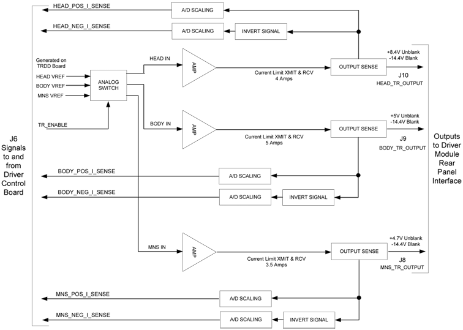
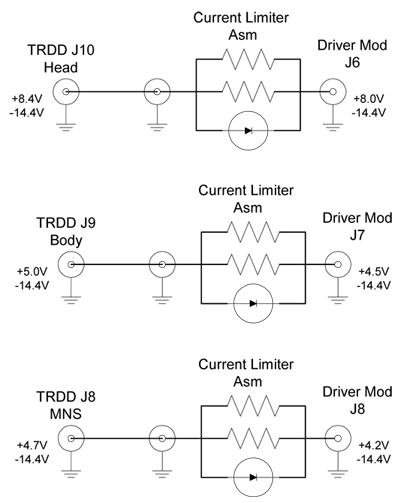
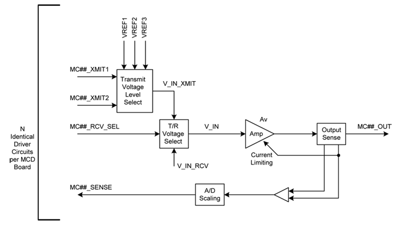
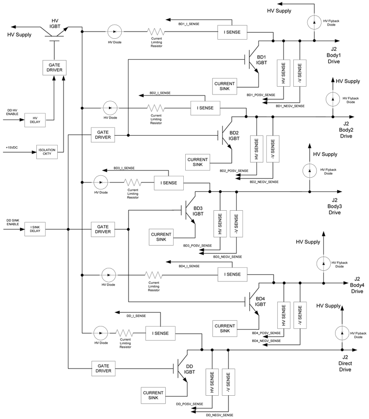

Operating Documentation
Direction 5440001-3, Rev# 6
Signa HDxt Service Methods
Module Version 1.0, Version Date 4/25/07
Operating Documentation |
The SSM and the G3 Driver Module are similar in the general concept of the drivers. Both contain driver circuits for the TR Switches, which protect the preamplifiers from the large transmit power; the Multi-Coil arrays and preamp protection circuitry and the Dynamic Disable circuitry, which enables or disables the body coil during scans.
There are three separate TR drivers in both; Head, Body, and MNS. They provide the DC bias for the Switches and the coils where applicable; i.e., surface coils. In both the SSM and the Driver Module, these drivers are constant voltage sources. In other words, they provide a constant DC voltage at the output and the current draw is dependent solely on the system load. Both the SSM and the Driver Module provide a positive bias during transmit (unblank) and a negative bias during receive (blank) without regard to the scan type prescribed. Anytime the system is in a state of unblank the output of these drivers is positive, otherwise the output is negative.
In the SSM, the TR driver circuits were positioned in the module such that the output was right at the rear panel. During transmit, the output voltages of these drivers when measured at the SSM were approximately: Head 8V; Body 4V, and MNS 4.3V. During receive the voltage from all three drivers was approximately -12V.
In the Driver Module the TRDD board that contains the TR drive circuits is positioned approximately in the middle of the module. Between the board’s output and the rear panel BNC connectors is approximately 9-inches of coaxial cable and a current limiter assembly. The current limiter assembly contains a diode, which is forward biased during transmit, and large current limiting resistors, which are in the output path during receive. The purpose of this assembly is to limit the current to the load in receive mode in the event that a short circuit is placed on any of the TR Switches. For example, if a short circuit is placed on the Head TR Switch due to a failure of a coil or a diode in the Switch itself shorts, the current sunk to the driver will be approximately 350 mA rather than the 1-amp that would be sunk without any current limiting. The Head TR Switch should be able to withstand 350 mA of current indefinitely through its resistor, which supplies the coil bias. Therefore, a shorted coil will not result in a failure of the Head TR Switch. Because the diode on the current limiter assemblies introduces a small voltage drop, the output voltages of the TR drivers was adjusted slightly on the TRDD board such that the output at the rear of the module was approximately what the SSM provided. Based on a request from the designer of the G3 Body TR Switch, the body TR driver was increased slightly more than what the SSM provided. During receive during normal (non-shorted) conditions, there should be no current flow and the output voltage at the rear of the module will be approximately -14.4V for all three TR drivers.
Table 1:
| TR Driver | Vout at TRDD Board TP during transmit | Approx Vout at ModuleBNC during transmit* |
| Head | 8.4V at TP 2 | 8V at J6 |
| Body | 5.0V at TP 27 | 4.5V at J7 |
| MNS | 4.7V at TP 75 | 4.2V at J8 |
* NOTE: These voltages are approximate because they are dependent on the amount of current draw in the system. These were measured with approximately 1.4 amps in the Head path; 2.8 amps in the Body path and 2.1 amps in the MNS path.
SECOND NOTE: These voltages are applicable for G3 Driver Modules that have deviation M-277-03 applied to them or are at Revision 3 or later. A label with this deviation number can be found at the rear of the module. There are approximately 14 early modules, which only had deviation M-259-03 applied. These modules only had a current limiter assembly in the Head path and did not have the output of the TRDD board adjusted to account for the diode drop. These modules had TRDD board outputs of: Head 8V; Body 4V and MNS 4.3V and module output voltages of approximately: Head 7.6V; Body 3.9V and MNS 4.2V.
The figure below shows the concept for the TR drivers on the TRDD board. Note that the current limiter assemblies are not shown here since the boundary of this diagram is the TRDD board itself. The current limiter assemblies would be positioned at the right side
Illustration 1:

All three TR drivers always work in sync with each other and their outputs always toggle with the unblank signal. Although the MNS TR driver output will toggle during every scan sequence, open and short circuit errors on this particular driver are only monitored when doing an MNS pulse sequence.
The figure below shows the relationship between output of the TRDD board and the rear panel of the G3 Driver Module.
Illustration 2:

There are multiple MC drivers in the Driver Module and there were only four independent MC driver circuits in the SSM. The Driver Module has 32 independent MC drivers although only eight are utilized. These driver circuits are also constant voltage sources so the amount of current draw is only dependent on the system load. The major difference between the MC drivers in the SSM and those in the Driver Module is that the SSM provided only +5V and -5V outputs and the Driver Module has several different possible output voltages. The 4 MC drivers in the SSM either output +5V or -5V depending on the type of scan, the multi-coil array used and the state of the unblank signal. The MC drivers in the Driver Module were designed such that they could be independently configured for either a +3V, +5V, or +7V output when positive bias is required and -5V output when an MC channel was being received from. The -5V bias is the same as the SSM because typically there is little or no current draw and its only purpose is to reverse bias diodes on the MC array off. Since the power levels are small during receive, only a small voltage is required to keep the diodes off. When a positive output voltage is required, since these drivers are constant voltage sources and the amount of current supplied to the coils is dependent on the load, the coil designers wanted to be able to configure the bias voltage to suit the coil. If, for example, a coil design had very low DC loss and only one diode per channel, it may be desirable to have a 3-volt output to reduce the amount of bias current and therefore the amount of heat generated by the decoupling circuit on the coil. However, if a coil design stacked several diodes in series it may be desirable to have a 7-volt output from the driver so that enough current flows to adequately bias the diodes on. Stacking diodes on a coil creates a “head-voltage” that the driver must push against with respect to current flow. The 5-volt output was desired for historical reasons since most MC arrays were designed to work with this driver output. The Coil Configuration file contains the information the Driver Module requires to correctly set up the MC driver outputs.
The figure below shows the design concept of one of the MC drivers. This circuitry resides on the Multi-Coil Driver (MCD) board within the module.
Illustration 3:

The Dynamic Disable drivers in the Driver Module are also similar in concept to those in the SSM. Both use IGBT devices (Insulated Gate Bipolar Transistors) to achieve the high voltage output. The DD drivers have two possible modes – they can be constant voltage sources when a high voltage, low current output is desired or constant current sources when they are required to turn the DD diodes on. Depending on the coil used for transmit and receive (i.e. body, head or surface), the DD drivers will either remain at high voltage or constant current output throughout the entire scan or they will toggle between the two modes with the unblank signal.
Although the concept for the Dynamic Disable drivers is similar between the SSM and the Driver Module there are a few differences. The most obvious difference when comparing the two modules is that the SSM had two DD drivers dedicated to the DD boards on the body coil and one for the Direct Drive in the body hybrid. These are labeled BD1, BD2, and DD. With the Driver Module we have increased the number of drivers dedicated to the body DD boards to four and still have one for the Direct Drive. These are labeled BD1, BD2, BD3, BD4, and DD. Even though we have increased the number of drivers, the amount of current available to turn the HV diodes on is approximately the same as with the SSM. In other words, the Body-1 output on the SSM is capable of approximately 2-amps of current sink whereas the Body-1 output on the SSM is capable of about 1-amp of current sink.
Another difference is that the SSM only allows for two high voltage levels (500V and 1000V), which are jumper selectable. The Driver Module theoretically allows for any HV output setting from 0V to 1000V. There is a high voltage power supply assembly in the unit that has an analog input (0-5V), which is directly related to its output. The Driver Module uses a parameter in the DcbConfig.cfg file to properly set this voltage level. The DD output voltage required in 3T Systems (G3) is 500V.
Another new feature not available with the SSM is the ability to configure the Driver Module to work in what we call “Standard” or “Reverse” mode. This refers to whether the DD drivers are in HV output mode during body scans or current sink mode during body scans. This is determined by the design and configuration of the body coil in a system. For example, in the current 1.5T Excite system (BRM, TRM or CRM), the dynamic disable diodes on the body coil and in the Direct Drive must be reverse biased off with a large positive voltage when you want to use the body coil for transmit or receive. Therefore, in 1.5T Excite during body scans the output from the DD drivers remains at a HV output. The DD drivers go to current sink mode to bias the diodes on when the body coil needs to be decoupled from the system (as during head coil scanning or during surface coil receive). We refer to this configuration as “Standard”. We use the “Reverse” configuration in 3T G3 Systems. In this case, the DD diodes are biased on by the drivers going into current sink mode during body scans and they are reverse biased with high voltage during head scans. The Driver Module uses a parameter in the DcbConfig.cfg file to set up as standard or reverse.
Table 2:
| System | DD Driver Configuration | DD Output State During: | |||
| Body Scan | Head Scan | Surface Scan | |||
| Unblank (XMIT) | Blank (RCV) | ||||
| 3.0T G3 Magnet | Reverse | Current Sink | High Voltage | Current Sink | High Voltage |
| 3T Eclipse Excite | Standard | High Voltage | Current Sink | High Voltage | Current Sink |
| 1.5T Systems | Standard | High Voltage | Current Sink | High Voltage | Current Sink |
The figure on the following page shows the design concept of the Dynamic Disable drivers. It is sort of a totem pole topology where either the HV IGBT (shown in the Figure) is on or the other five IGBT devices (labeled BD1-4 & DD) are on. All five Dynamic Disable drivers are always in sync with each other. In other words, assuming everything is working normally, all five will either be in HV output mode, or current sink mode at any give moment in time. It is not possible, for example, for BD1 to have a HV output and BD2 to be in current sink mode. Note that the “J” designators in the figure refer to those on the TRDD board. Between the TRDD board and the rear of the Driver Module is a high voltage harness that converts the single 5-circuit Mate-N-Lok connection on the board to five independent MHV connectors (high voltage BNC-like connectors).
Table 3:
| Driver | Module Rear Panel Designator | Pen Panel | Load | |
| Equipment Room Side | Magnet Side Room | |||
| BD1 | J21 | J92 | J72 | J3 Body Coil Front |
| BD2 | J22 | J93 | J73 | J4 Body Coil Front |
| DD | J23 | J94 | J74 | J6 Direct Drive (Body Hybrid) |
| BD3 | J24 | J95 | J75 | J5 Body Coil Rear |
| BD4 | J25 | J96 | J76 | J6 Body Coil Rear |
Illustration 4:
